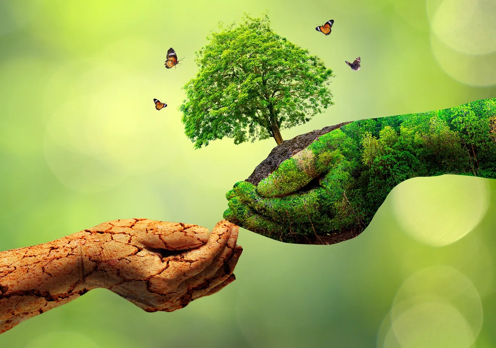

Que es la contaminacion?
La contaminación es un fenómeno complejo que abarca diversas formas de degradación ambiental causada por la introducción de sustancias perjudiciales en el entorno. Esta introducción puede ser el resultado de actividades humanas, naturales o una combinación de ambas. La contaminación tiene efectos negativos significativos en la salud humana, la biodiversidad, los ecosistemas y el clima. Aquí, profundizaré en algunos aspectos clave de la contaminación:
Fuentes de Contaminación.
Contaminación Antropogénica:
La actividad humana es una fuente primaria de contaminación. Las emisiones industriales, la quema de combustibles fósiles, la agricultura intensiva, la gestión inadecuada de desechos y la liberación de productos químicos tóxicos contribuyen a la contaminación en sus diversas formas.
Contaminación Natural:
Aunque la actividad humana es una causa significativa de la contaminación, ciertos eventos naturales, como erupciones volcánicas, incendios forestales y procesos geológicos, también pueden introducir contaminantes en el medio ambiente.

Efectos de la Contaminación.
Impacto en la Salud Humana:
La contaminación del aire puede dar lugar a problemas respiratorios, cardiovasculares y otras enfermedades. La contaminación del agua puede provocar enfermedades transmitidas por el agua, mientras que la contaminación del suelo puede afectar la calidad de los alimentos que consumimos.
Daño a la Biodiversidad:
Los contaminantes pueden tener efectos perjudiciales en los organismos vivos, desde insectos y plantas hasta animales más grandes. La pérdida de biodiversidad puede desequilibrar los ecosistemas y afectar negativamente a la cadena alimentaria.
Cambios Climáticos:
Algunos contaminantes, como los gases de efecto invernadero, contribuyen al calentamiento global y al cambio climático. Esto tiene consecuencias en la frecuencia e intensidad de eventos climáticos extremos, como huracanes, inundaciones y sequías.

Medidas de Mitigación:
Regulación Ambiental:
La implementación de leyes y regulaciones que limiten las emisiones y descargas de contaminantes es esencial. Esto implica establecer estándares de calidad ambiental y sanciones para aquellos que no cumplan con estas normativas.
Tecnologías Limpias:
El desarrollo y la adopción de tecnologías limpias y sostenibles en la industria y otros sectores son clave para reducir la generación de contaminantes.
Educación Ambiental:
Crear conciencia pública sobre los impactos de la contaminación y fomentar prácticas sostenibles en la vida diaria son fundamentales. La educación ambiental contribuye a un cambio de actitud y comportamiento hacia el medio ambiente.
Gestión de Residuos:
Mejorar la gestión de residuos, promoviendo la reducción, reutilización y reciclaje, ayuda a minimizar la cantidad de desechos que terminan contaminando el suelo y el agua. La lucha contra la contaminación requiere un enfoque integral que abarque la colaboración entre gobiernos, empresas, comunidades y ciudadanos individuales. La adopción de prácticas más sostenibles y la inversión en soluciones respetuosas con el medio ambiente son esenciales para abordar este desafío global.